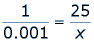
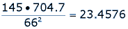
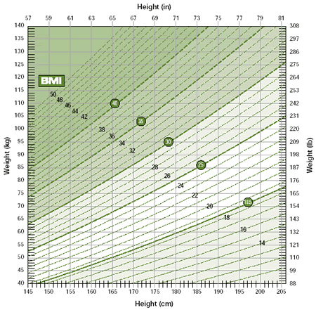
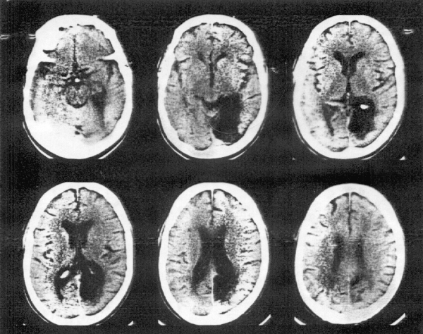

Both doctors and nurses use math every day while providing health care for people around the world. Doctors and nurses use math when they write prescriptions or administer medication. Medical professionals use math when drawing up statistical graphs of epidemics or success rates of treatments. Math applies to x-rays and CAT scans. Numbers provide an abundance of information for medical professionals. It is reassuring for the general public to know that our doctors and nurses have been properly trained by studying mathematics and its uses for medicine.
Regularly, doctors write prescriptions to their patients for various ailments. Prescriptions indicate a specific medication and dosage amount. Most medications have guidelines for dosage amounts in milligrams (mg) per kilogram (kg). Doctors need to figure out how many milligrams of medication each patient will need, depending on their weight. If the weight of a patient is only known in pounds, doctors need to convert that measurement to kilograms and then find the amount of milligrams for the prescription. There is a very big difference between mg/kg and mg/lbs, so it is imperative that doctors understand how to accurately convert weight measurements. Doctors must also determine how long a prescription will last. For example, if a patient needs to take their medication, say one pill, three times a day. Then one month of pills is approximately 90 pills. However, most patients prefer two or three month prescriptions for convenience and insurance purposes. Doctors must be able to do these calculations mentally with speed and accuracy.
Doctors must also consider how long the medicine will stay in the patient's body. This will determine how often the patient needs to take their medication in order to keep a sufficient amount of the medicine in the body. For example, a patient takes a pill in the morning that has 50mg of a particular medicine. When the patient wakes up the next day, their body has washed out 40% of the medication. This means that 20mg have been washed out and only 30mg remain in the body. The patient continues to take their 50mg pill each morning. This means that on the morning of day two, the patient has the 30mg left over from day one, as well as another 50mg from the morning of day two, which is a total of 80mg. As this continues, doctors must determine how often a patient needs to take their medication, and for how long, in order to keep enough medicine in the patient's body to work effectively, but without overdosing.
The amount of medicine in the body after taking a medication decreases by a certain percentage in a certain time (perhaps 10% each hour, for example). This percentage decrease can be expressed as a rational number, 1/10. Hence in each hour, if the amount at the end of the hour decreases by 1/10 then the amount remaining is 9/10 of the amount at the beginning of the hour. This constant rational decrease creates a geometric sequence. Doctors can use this idea to quickly decide how often a patient needs to take their prescribed medication.
Nurses also use ratios and proportions when administering medication. Nurses need to know how much medicine a patient needs depending on their weight. Nurses need to be able to understand the doctor's orders. Such an order may be given as: 25 mcg/kg/min. If the patient weighs 52kg, how many milligrams should the patient receive in one hour? In order to do this, nurses must convert micrograms (mcg) to milligrams (mg). If 1mcg = 0.001mg, we can find the amount (in mg) of 25mcg by setting up a proportion.
By cross-multiplying and dividing, we see that 25mcg = 0.025mg. If the patient weighs 52kg, then the patient receives 0.025(52) = 1.3mg per minute. There are 60 minutes in an hour, so in one hour the patient should receive 1.3(60) = 78mg. Nurses use ratios and proportions daily, as well as converting important units. They have special “shortcuts” they use to do this math accurately and efficiently in a short amount of time.
Numbers give doctors much information about a patient's condition. White blood cell counts are generally given as a numerical value between 4 and 10. However, a count of 7.2 actually means that there are 7200 white blood cells in each drop of blood (about a microlitre). In much the same way, the measure of creatinine (a measure of kidney function) in a blood sample is given as X mg per deciliter of blood. Doctors need to know that a measure of 1.3 could mean some extent of kidney failure. Numbers help doctors understand a patient's condition. They provide measurements of health, which can be warning signs of infection, illness, or disease.
In terms of medicine and health, a person's Body Mass Index (BMI) is a useful measure. Your BMI is equal to your weight in pounds, times 704.7, divided by the square of your height in inches. This method is not always accurate for people with very high muscle mass because the weight of muscle is greater than the weight of fat. In this case, the calculated BMI measurement may be misleading. There are special machines that find a person's BMI. We can find the BMI of a 145-pound woman who is 5'6" tall as follows.
First, we need to convert the height measurement of 5'6" into inches, which is 66". Then, the woman's BMI would be:
This is a normal Body Mass Index. A normal BMI is less than 25. A BMI between 25 and 29.9 is considered to be overweight and a BMI greater than 30 is considered to be obese. BMI measurements give doctors information about a patient's health. Doctor's can use this information to suggest health advice for patients. The image below is a BMI table that gives an approximation of health and unhealthy body mass indexes.
One of the more advanced ways that medical professionals use mathematics is in the use of CAT scans. A CAT scan is a special type of x-ray called a Computerized Axial Tomography Scan. A regular x-ray can only provide a two-dimensional view of a particular part of the body. Then, if a smaller bone is hidden between the x-ray machine and a larger bone, the smaller bone cannot be seen. It is like a shadow.
It is much more beneficial to see a three dimensional representation of the body's organs, particularly the brain. CAT scans allow doctors to see inside the brain, or another body organ, with a three dimensional image. In a CAT scan, the x-ray machine moves around the body scanning the brain (or whichever body part is being scanned) from hundreds of different angles. Then, a computer takes all the scans together and creates a three dimensional image. Each time the x-ray machine makes a full revolution around the brain, the machine is producing an image of a thin slice of the brain, starting at the top of the head and moving down toward the neck. The three-dimensional view created by the CAT scan provides much more information to doctors that a simple two-dimensional x-ray.
Mathematics plays a crucial role in medicine and because people's lives are involved, it is very important for nurses and doctors to be very accurate in their mathematical calculations. Numbers provide information for doctors, nurses, and even patients. Numbers are a way of communicating information, which is very important in the medical field.
Source